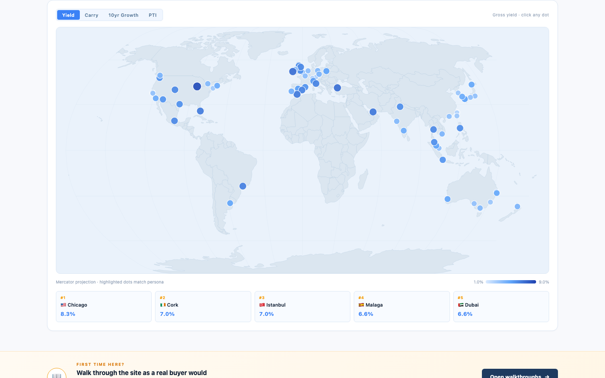
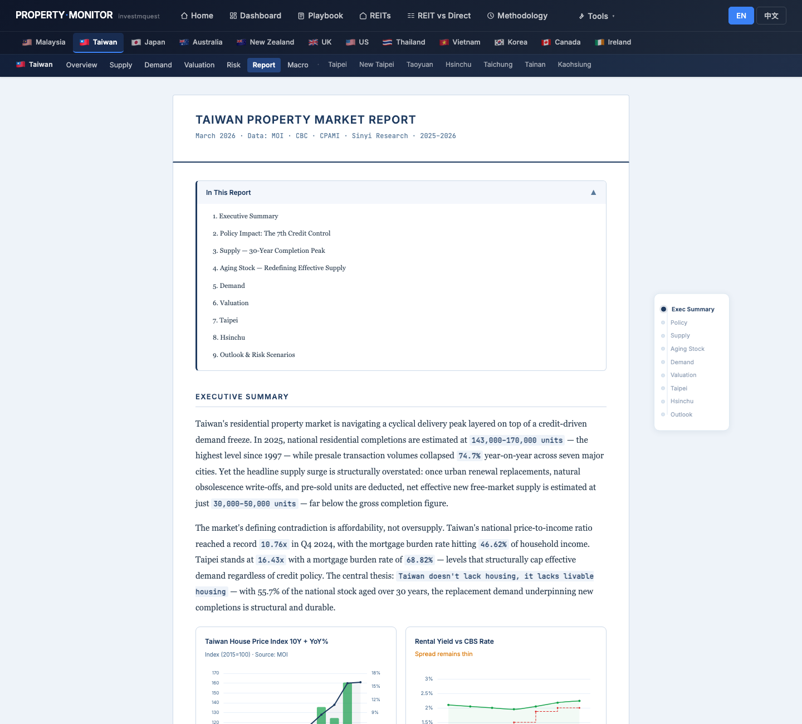
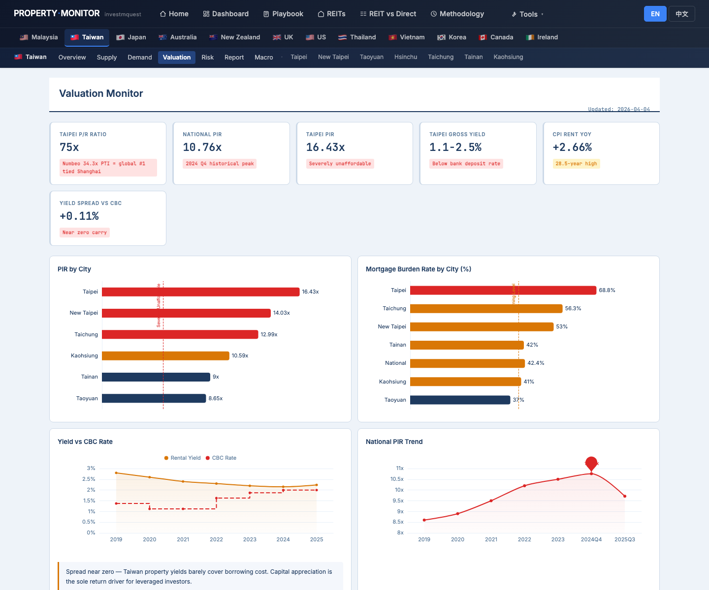
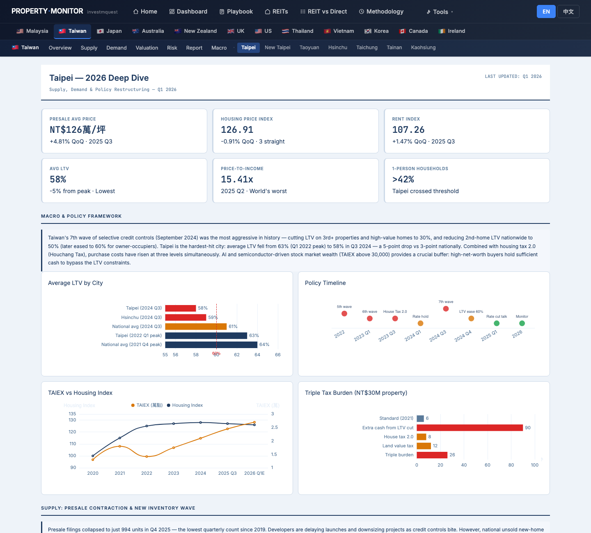
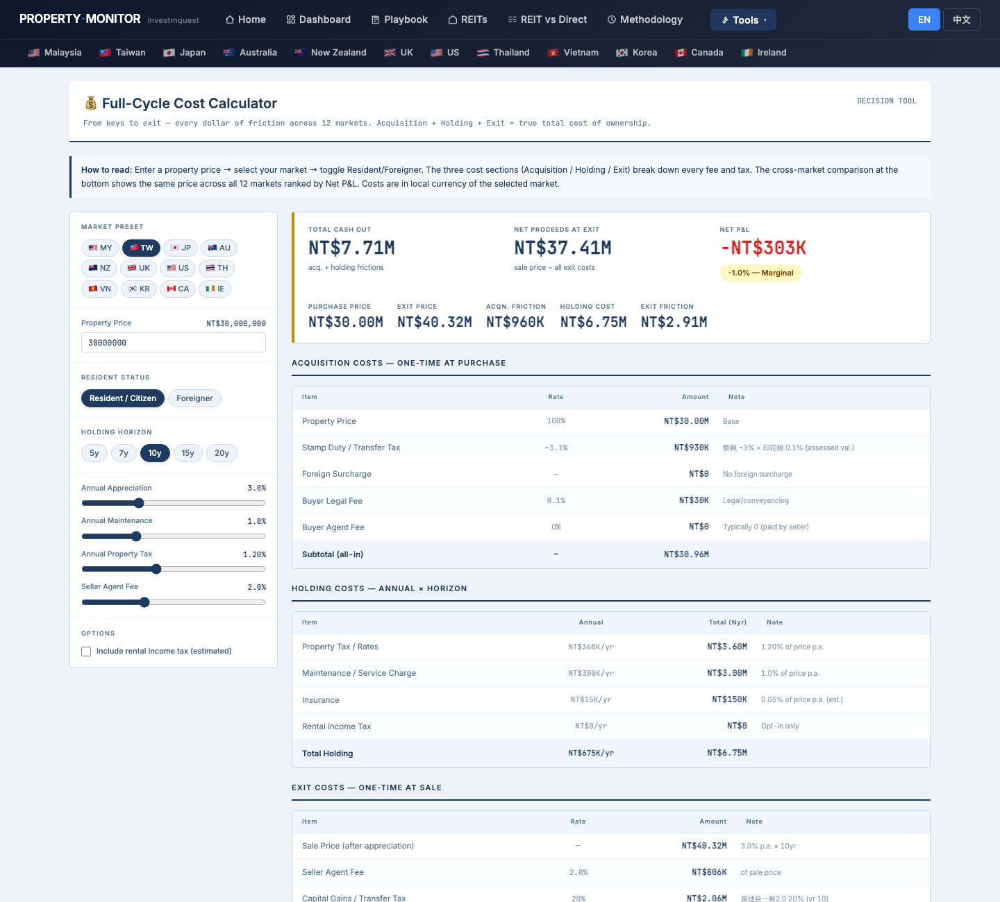
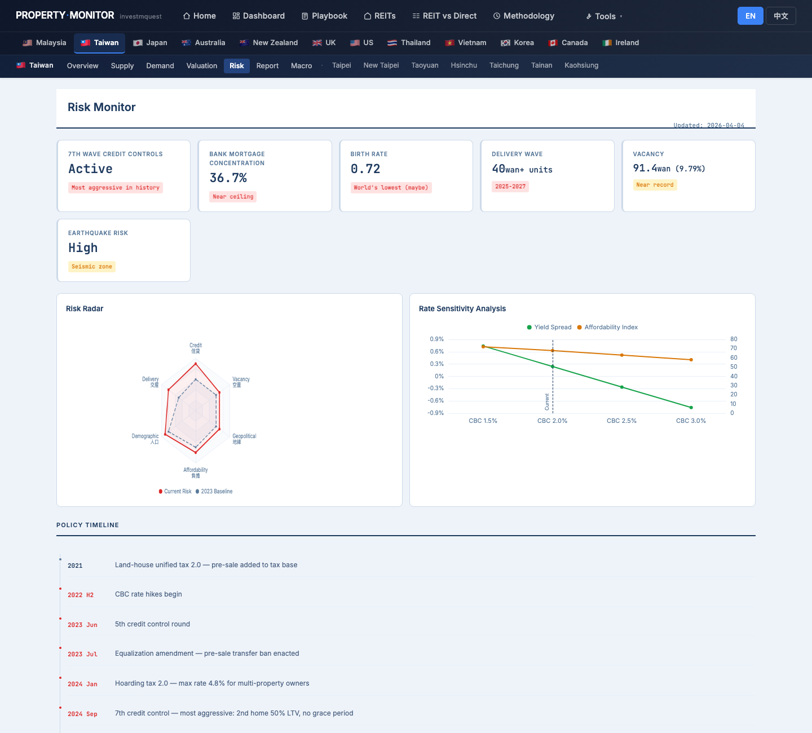

Mr. Huang (48, Taiwanese, Google Singapore, 8 years abroad) holds US$1.5M (~NT$48M) across SGD/USD/TWD accounts. He plans to return to Taipei in 2 years to care for aging parents. He wants to buy a Taipei apartment now — locking in a property while TW prices and FX are where they are — so he has a ready home on return. He is currently SG tax-resident (not TW) but will flip to TW tax-resident on return. He's not a first-time buyer (sold a previous TW property years ago) but this is his first purchase as a returning overseas Taiwanese. This walkthrough shows you which page to open first, what to click, what each chart means, and where to find each function — using Mr. Huang's three-layer question: FX timing, market entry, and return logistics. It is not investment advice, tax advice, or property recommendations. 黃先生，48 歲，台灣人，在新加坡 Google 任職 8 年，持有約 US$150 萬（約 NT$4,800 萬）分散在 SGD/USD/TWD 帳戶。他計畫 2 年後返台照顧年邁父母。他想現在就買好台北公寓——趁現在的台灣房價與匯率先鎖定物件，回來就能直接住。他目前是新加坡稅務居民（非台灣稅務居民），返台後才會切換回台灣稅務居民身份。他不是首購族（多年前賣掉了台灣的房），但這是他第一次以海外返台台灣人身份購屋。這份導覽用黃先生的三層問題為主軸——換匯時機、進場判斷、返台後勤——告訴你先打開哪一頁、點哪裡、每張圖代表什麼、各種功能藏在哪。本文不是投資建議、稅務建議或不動產推薦。
- Where on the site does the TW market story live for someone planning to return in 2 years?對一個計劃 2 年後返台的人，台灣市場的完整故事在哪裡找？
- Where can I check the macro context — CBC rate cycle and FX/carry backdrop — should I convert USD→TWD now or wait?總體背景 — CBC 利率週期、FX/利差背景 — 在哪裡看？我應該現在換匯（USD→TWD）還是等等？
- Taipei vs New Taipei — which fits a returning professional planning to live with or near aging parents?台北 vs 新北 — 哪個更適合計劃就近照顧年邁父母的返台專業人士？
- What does NT$30M end-to-end as a returning Resident vs current Foreign buyer status?以返台後的居民身份 vs 目前的外國買家身份，NT$3,000 萬的實際總成本差多少？
- Should I park USD in TW REITs (kept abroad) or convert to TWD and buy direct now?我應該把 USD 放在 TW REIT（留在境外）還是換成 TWD 現在就直接買？
- What TW-specific risks affect returning cash buyers — CBC reporting, 房地合一稅 if I sell later, 海外所得 declaration?哪些台灣特有風險會影響返台現金買家？CBC 外資申報、如果日後出售的房地合一稅、海外所得申報義務？
- How do I switch the site to 中文? Where do I download a PDF for my SG accountant?怎麼把網站切換到中文？怎麼下載 PDF 給新加坡會計師看？
Mr. Huang's click-by-click tour — 12 stops黃先生的逐步點擊旅程 — 12 個停靠點
Each stop is a real page on the site. For each, you'll see what Mr. Huang clicks, what he sees on the screen, and how that screen relates to his overseas-returnee situation. Follow along in another tab — every URL works. 每個停靠點都是站上的一頁實際畫面。每站告訴你黃先生點什麼、螢幕出現什麼、這個畫面跟他的海外返台情境有什麼關係。建議另開分頁跟著走 — 所有連結都能直接點。
TW market context from afar從海外視角讀懂台灣市場
Land on the home page and pick the "I want growth" persona進入首頁，選「我要增值」persona 卡
What he sees: the "I want growth" card lights up amber with a checkmark. The scatter chart below reweights — highlighted dots emphasize cities with strong 10-year appreciation profiles. The world map recolors to show 10yr growth intensity. Taiwan cities — Taipei, Hsinchu, New Taipei — appear as distinct data points in the growth quadrant. 螢幕出現什麼：「我要增值」卡片變琥珀色亮起。下方散點圖重新排序，強調 10 年漲幅強勁的城市。世界地圖重新著色，顯示 10 年漲幅強度。台灣城市 — 台北、新竹、新北 — 作為獨立資料點出現在成長象限中。

Use the world map — locate Taiwan cities and compare with Singapore用世界地圖 — 找台灣城市，順手和新加坡比較
What he sees: dot intensity on 10yr growth mode — deeper teal = stronger appreciation track record. He can see Singapore and Taipei side-by-side in the Asia-Pacific cluster. The Top 5 strip below the map shows which cities lead the currently selected metric. For a returning Taiwanese who has been living in Singapore's high-price market, the relative PTI comparison across the two city dots is immediate and grounding. 螢幕出現什麼：10 年漲幅模式下，點的顏色越深代表升值紀錄越強。他能在亞太叢集中並排看到新加坡和台北。地圖下方的 Top 5 清單顯示在目前指標中領先的城市。對一個在新加坡高房價市場生活過的返台台灣人，這個跨城市 PTI 比較是即時且直觀的基準。

Read the TW long-form report — supply/demand outlook 2 years out for his planned return讀台灣長篇報告 — 掌握他計畫返台的 2 年後供需展望
What he sees: a long-form analyst report structured in named sections — Executive Summary, Policy Impact (7th Credit Control), Supply, Aging Stock (老屋重建), Demand, Valuation, City chapters (Taipei, New Taipei, Hsinchu…), Outlook. The report notes that 房地合一稅 2.0 structurally removed short-term speculative demand — the remaining buyers are owner-occupiers, upgraders, and overseas Taiwanese repatriating capital. A table of contents at the top allows anchor-jump navigation. 螢幕出現什麼：長篇研究報告按章節排列 — 執行摘要、政策衝擊（第七波信用管制）、供給面、老屋結構、需求面、估值、城市章節（台北、新北、新竹…）、展望。報告指出，房地合一稅 2.0 從結構上移除了短線投機需求，目前的買家主要是自住首購、換屋族以及回台台灣人匯回資金。頁面頂部有目錄，支援章節錨點跳轉。

Macro context + FX positioning總體背景 + 換匯時機判斷
Macro page — CBC rate cycle (and where to find the TW vs SG carry context for his FX decision)總經頁 — CBC 利率週期（以及在哪裡找到 TW vs SG 利差背景，幫助換匯決策）
What he sees: at the top, a horizontal cycle bar — Taiwan's rate eras from the GFC through the COVID boom through the 2022 hike cycle and the current plateau. CBC is at 2.00% on hold. Six KPI cards: CBC Rate, House Price Index, CPI, GDP Growth, Mortgage Credit Growth, Population. Then dual-axis historical line charts — monetary cycle vs HPI, and real economy vs HPI. Key Cycle Events timeline at the bottom shows milestone by milestone how rate changes, credit controls, and macro events transmitted into property prices going back to 2008. 螢幕出現什麼：最上方是台灣利率時代的橫向週期時間軸——從 GFC、COVID 多頭、2022 升息週期，到目前的利率高原。CBC 目前維持在 2.00%。6 張 KPI 卡：CBC 利率、房價指數、CPI、GDP 成長、房貸成長、人口。然後是兩張雙軸歷史折線圖——貨幣週期 vs HPI、實體經濟 vs HPI。頁底的關鍵週期事件時間軸逐一顯示，從 2008 年起每個升降息、信用管制、總體事件如何傳導到房價。

Valuation page — is TW property overvalued before parking US$1.5M?估值頁 — 在把 US$150 萬停泊進台灣前，台灣房市估值過高嗎？
What he sees — 6 KPI cards: Taipei P/R Ratio (price ÷ annual rent — years of rent to buy), National PIR, Taipei PIR, Taipei Gross Yield, CPI Rent YoY, Yield Spread vs CBC. 4 charts: PIR by City (Taipei consistently the highest), Mortgage Burden Rate by City (%), Yield vs CBC Rate (showing compression), National PIR Trend — history back to 2011. Valuation Framework text: interpretation of what the current ratios imply — stretched by income metrics, partially justified by structural low supply (Taipei land scarcity), CBC credit controls suppressing speculative turnover. 螢幕出現什麼 — 6 張 KPI 卡：台北租金比（P/R Ratio，房價 ÷ 年租金，等於幾年租金），全國房價所得比、台北房價所得比、台北毛租金收益率、CPI 租金 YoY、利差 vs CBC。4 張圖：各城市房價所得比（台北持續最高）、各城市房貸負擔率（%）、殖利率 vs CBC 利率（顯示收斂）、全國房價所得比趨勢——歷史回溯至 2011 年。估值框架文字：解讀目前比率的含意——以收入指標看偏貴，但部分由結構性低供給（台北土地稀缺）、CBC 信用管制壓制投機周轉所支撐。

Target market selection — Taipei vs New Taipei目標市場選擇 — 台北 vs 新北
Taipei deep dive — the primary target (parents' city, central, future family base)台北深度頁 — 主要目標（父母的城市、市中心、未來家庭基地）
What he sees: KEY METRICS — Presale Avg Price, Housing Price Index, Rent Index, Avg LTV, Price-to-Income, 1-Person Households. A District Price Map (2026 Q1) showing per-ping price across all Taipei administrative districts (信義 > 大安 > 中山 ≫ 文山 / 內湖). KEY ZONES cards break out major sub-areas: 信義/大安 (premium), 中山/松山 (mid-to-high), 內湖/南港 (tech corridor, lower PSF), 文山/萬華 (entry). KEY INSIGHTS note: presale contraction is compressing new supply pipeline; resale volume is rising as sellers accept reality. 螢幕出現什麼：KEY METRICS — 預售屋均價、房價指數、租金指數、平均房貸成數、房價所得比、一人家戶佔比。2026 Q1 各行政區房價地圖顯示台北各行政區每坪均價（信義 > 大安 > 中山 ≫ 文山 / 內湖）。KEY ZONES 卡片細分主要次區域：信義/大安（頂級）、中山/松山（中高）、內湖/南港（科技廊帶，單坪較低）、文山/萬華（入門）。KEY INSIGHTS 指出：預售市場收縮壓縮了新供給管線；賣方接受現實後，中古屋成交量上升。

New Taipei as the alternative — lower PSF, MRT to Taipei, if budget stretches新北作為備選 — 單坪較低、捷運通台北，如果預算需要調整
Side-by-side comparison:
▸ Taipei: higher avg price, compressed yield, structural land scarcity, aging stock premium (老屋 reconstruction opportunity), district price range is wide (信義 >> 文山). Suitable for someone who wants maximum liquidity and prestige, and whose parents likely live in Taipei proper.
▸ New Taipei: lower avg price (meaningfully more square footage for NT$30M), MRT coverage in inner districts, more new supply (risk and opportunity), younger building stock in growth corridors. Better value per ping but requires deliberate commute analysis to parents' location.
兩個分頁並排比較：
▸ 台北：均價更高、收益率更低、土地稀缺性強、老屋重建溢價，各行政區價差大（信義 >> 文山）。適合想要最高流動性和門牌效應的人，而且父母可能就住在台北市。
▸ 新北：均價較低（NT$3,000 萬能買到明顯更大的坪數）、內環區有捷運覆蓋、新供給較多（是風險也是機會）、成長廊帶的建物屋齡較新。每坪性價比更好，但需要仔細評估通勤到父母家的距離。

Taiwan dashboard — KPI grid cross-city sense check before committing台灣儀表板 — 下決定前的跨城市 KPI 感知確認
What he sees:
① MARKET TEMPERATURE — 2025 Transactions, Taipei Presale Avg, Loan Approval Rate, Gross Rental Yield.
② AFFORDABILITY PRESSURE — Yield Spread vs CBC, Taipei Median Multiple, National Median Multiple, Vacancy Rate. (As a cash buyer, the loan approval rate is less critical to Mr. Huang, but the PIR confirms the market isn't softening structurally.)
③ DEMAND MOMENTUM — Hsinchu 5Y Appreciation, 2024 Transactions, Taipei Mortgage Ratio, CBC Policy Rate.
Six charts including the six-city avg price bar — showing Taipei > Hsinchu > New Taipei > Taoyuan > Taichung > Kaohsiung — and transaction volume trend showing the post-credit-control dip and recovery.
螢幕出現什麼：
① 市場溫度 — 2025 成交量、台北預售均價、房貸核准率、毛租金收益率。
② 負擔壓力 — 利差 vs CBC、台北房價所得比、全國房價所得比、空屋率。（作為現金買家，房貸核准率對黃先生不那麼關鍵，但 PIR 確認市場並未在結構上軟化。）
③ 需求動能 — 新竹 5 年漲幅、2024 成交量、台北房貸負擔率、CBC 基準利率。
六張圖，包括六都均價長條圖——顯示台北 > 新竹 > 新北 > 桃園 > 台中 > 高雄——以及成交量趨勢圖顯示信用管制後的量縮與回升。

Cost + cross-market sanity check成本試算 + 跨市場合理性確認
Cost Calculator — what does NT$30M actually cost over 10 years as a returning Resident?Cost Calculator — NT$3,000 萬以返台居民身份持有 10 年，實際總成本是多少？
What he sees: a full cost breakdown across three phases — Acquisition: 契稅 (deed tax), 印花稅 (stamp duty), agent commission, registration fees. Annual holding: 房屋稅 (house tax), 地價稅 (land value tax), insurance, maintenance. Exit (10yr): 房地合一稅 (CGT at 10yr for a TW resident — the rate is much lower than for short holds or foreign status). The tool shows total cost of ownership in NT$ and as % of purchase price. A summary bar chart shows the cost breakdown visually. 螢幕出現什麼：完整的三階段成本分解 — 取得：契稅、印花稅、仲介費、登記規費。年度持有：房屋稅、地價稅、保險、管理費。退出（10 年）：房地合一稅（台灣居民 10 年持有的稅率——比短期持有或外國人身份低得多）。工具顯示 NT$ 總持有成本和佔購入價格的比例。摘要長條圖以視覺化方式顯示成本拆解。

REIT vs Direct — Foreign + TW chip: should he park in TW REITs first or convert USD→TWD now?REIT vs 直接買 — 外國人 + TW chip：先買 TW REIT 停泊，還是現在就換匯買直接？
What he sees: a three-way comparison table — TW REITs (listed in TW, TWD-denominated), SG REITs (his current exposure as SG resident), and Direct TW Property. For each: gross yield, tax drag, transaction cost, liquidity, FX exposure, 10yr terminal value from a US$100K starting position. The WHT row shows how much dividend income is lost to withholding tax for a Foreign vs Local taxpayer. The endpoint bar chart shows the 10yr terminal value of each route visually. A "Step 3" toggle lets him activate the TW–SG tax treaty row to see if there's a treaty benefit for his specific situation. 螢幕出現什麼：三方比較表——TW REIT（在台灣上市，TWD 計價）、SG REIT（他目前以新加坡居民身份持有）、直接買台灣房產。每一列都有：毛收益率、稅務拖累、交易成本、流動性、外匯風險、以 US$10 萬起始資金計算的 10 年終值。WHT 列顯示外國 vs 本國納稅人各有多少股息被預扣稅吃掉。終值長條圖以視覺化方式顯示每條路線的 10 年終值。「Step 3」toggle 讓他啟動台灣–新加坡租稅協定列，看他的具體情況是否有協定優惠。

Carry Heatmap — TW row vs SG row: has carry compressed or expanded for Taipei vs Singapore?Carry Heatmap — TW vs SG 那排：台北和新加坡的利差是在收斂還是擴大？
What he sees: the heatmap table shows 30+ global cities, each with a row of quarterly carry cells colored from dark red (deeply negative carry) through gray (near zero) to dark green (positive carry). The 5yr change column shows which cities' carry has contracted most (lost most positive carry since 2021) vs which have held up or improved. The Taipei row shows carry near zero (typical for a low-yield, moderate-rate city). The Singapore row shows its own carry position. The "5yr change" sort reveals which cities' investment case on carry grounds has strengthened vs weakened over the rate hike cycle since 2021. Clicking a row opens a sparkline: quarterly carry spread from 2021Q2 to 2026Q1. 螢幕出現什麼：熱力矩陣表顯示 30 多個全球城市，每個城市有一排季度 carry 格，顏色從深紅（深度負利差）經灰色（接近零）到深綠（正利差）。5 年變化欄顯示哪些城市的利差收縮最多（自 2021 年以來正利差損失最多），哪些撐住甚至改善。台北那排顯示利差接近零（低收益、中等利率城市的典型特徵）。新加坡那排顯示其自己的利差位置。「5 年變化」排序揭示哪些城市在自 2021 年利率升息週期以來，利差角度的投資邏輯是增強的，哪些是減弱的。點擊一排城市，可在細節面板開啟 sparkline：2021Q2 至 2026Q1 的季度利差軌跡。

Risks + return logistics風險 + 返台後勤
TW Risk page — CBC LTV rules, 房地合一稅, foreign cash deposit reporting; plus Methodology for his SG accountant台灣風險頁 — CBC LTV 規定、房地合一稅、外資現金進場申報；以及給新加坡會計師看的 Methodology
What he sees on /tw/risk: a Risk Radar chart showing TW's risk profile across dimensions (Credit Control Severity, Valuation Stretch, Supply Pipeline, Macro Headwinds, Political). Below: the Policy Timeline — every wave of CBC credit controls (1st through 7th), each with: date, LTV cap change, target buyer type, observed effect on transaction volume. Also: the 房地合一稅 rate table — CGT rates by holding period (45% if sold ≤2yr, 35% if 2–5yr, 20% if 5–10yr, 10–15% if >10yr for residents). Key risk notes: external demand (overseas Taiwanese repatriating capital) is a cited demand support factor — and also a potential volatility source if macro abroad deteriorates. On /methodology: a table of TW data sources — Ministry of the Interior (HPI, transactions), CBC (rates, LTV data), DGBAS (GDP, CPI), FSC (mortgage credit), Sinyi Realty (presale). /tw/risk 上看到什麼：風險雷達圖顯示台灣在各維度的風險輪廓（信用管制嚴厲度、估值拉伸、供給管線、總體逆風、政治）。下方：政策時間軸——每一波 CBC 信用管制（第一波至第七波），各附：日期、LTV 上限變動、目標買家類型、對成交量的觀察影響。還有：房地合一稅率表——按持有期區分的資本利得稅率（居民：持有 ≤2 年 45%、2–5 年 35%、5–10 年 20%、>10 年 10–15%）。主要風險說明：海外台灣人匯回資金是一個被引用的需求支撐因素——同時也是若海外總體環境惡化的潛在波動來源。/methodology 上：台灣資料來源表——內政部（房價指數、交易量）、CBC（利率、LTV 資料）、主計總處（GDP、CPI）、金管會（房貸信用）、信義房屋（預售屋）。

Quick-reference cheat sheet快速參考摘要
FX timing — what this site covers vs what it doesn't換匯時機 — 本站涵蓋 vs 不涵蓋的部分
What the site shows: carry spread (yield − mortgage rate) for Taipei and Singapore simultaneously on /carry-heatmap. Rate differential context on /tw/macro (CBC 2.00%) vs home page market tiles. What the site doesn't show: USD/TWD spot rate history, forward FX curves, cross-currency swap rates. For actual FX execution, Mr. Huang uses his SG private bank or Bloomberg.
Framework he can use from this site: if Taipei carry is near zero or negative and Singapore carry is comparable, the "buy TW now vs wait" decision is primarily a TWD appreciation bet, not a carry arbitrage — which changes the calculus significantly.
本站顯示：/carry-heatmap 同時顯示台北和新加坡的利差（收益率 − 房貸利率）。/tw/macro 提供利率差背景（CBC 2.00%）vs 首頁市場格。本站不顯示：USD/TWD 即期匯率歷史、遠期匯率曲線、換匯利率。實際換匯執行，黃先生用新加坡私人銀行或 Bloomberg。
他能從本站得到的框架：如果台北利差接近零或為負，而新加坡利差相當，「現在買台灣 vs 等待」的決定主要是 TWD 升值的賭注，不是套利機會——這個視角很重要。
FX timing decisions require a licensed FX advisor. No site can predict exchange rates.換匯時機決策需要有牌照的外匯顧問。沒有網站能預測匯率。
Tax residency mechanics — the two-phase problem稅務居民身份切換 — 兩階段問題
Phase 1 — purchase (now, while SG tax-resident): Mr. Huang technically qualifies as a "foreigner" buyer for TW registration purposes even as a TW national — his TW household registration status and tax residency status matter. Run the Cost Calculator with both Foreign and Resident to understand the cost delta. Register with a TW 地政士 for the correct buyer classification.
Phase 2 — return (2yr): once he re-establishes TW household registration and spends 183+ days/yr in TW, he flips to TW tax-resident. Rental income from any TW property, 海外所得, and any REIT dividend income from overseas holdings all come under TW tax reporting obligations. This site shows market data and tools — it does not cover cross-border tax planning.
第一階段 — 購入（現在，還是新加坡稅務居民）：即使是台灣國籍，黃先生在台灣登記上可能被視為「外國人」買家——取決於他的戶籍狀態和稅務居民身份。用「外國人」和「居民」兩種設定分別跑 Cost Calculator，了解成本差異。向台灣地政士諮詢正確的買家分類。
第二階段 — 返台（2 年後）：一旦他重新設籍台灣並且每年在台居住 183 天以上，就切換回台灣稅務居民。台灣不動產的租金收入、海外所得、以及境外持有的 REIT 股息，都納入台灣申報義務。本站顯示市場資料和工具——不涵蓋跨境稅務規劃。
Consult a TW 會計師 specializing in returnee taxation and a SG tax advisor before any large fund transfer.大額匯款前，請諮詢專精返台納稅的台灣會計師，以及新加坡稅務顧問。
房地合一稅 — CGT rate table (TW resident self-use)房地合一稅 — 稅率表（台灣居民自用）
The site's /tw/risk page shows the full rate table. Summary for a TW-resident self-use buyer:
≤2yr: 45% 2–5yr: 35% 5–10yr: 20% >10yr: 10–15%
Mr. Huang's plan: buy 2025, plan to hold 10+ years → he targets the >10yr bracket at 10–15% CGT. If parents pass and he sells at year 8, he's at 20%. The important note: holding period starts from the date of property registration, not the date of purchase contract. Registration date must be confirmed with the land agent.
本站 /tw/risk 頁面顯示完整稅率表。台灣居民自用買家摘要：
≤2年：45% 2–5年：35% 5–10年：20% >10年：10–15%
黃先生的計畫：2025 年買，計畫持有 10 年以上 → 他的目標是 >10 年的 10–15% 稅率。如果父母過世而在第 8 年賣，則適用 20%。重要說明：持有期從不動產登記日開始計算，不是簽約日。登記日期請與地政士確認。
Self-use exemption rules and exact calculation must be confirmed with a TW 會計師 before sale.自用豁免規定和確切計算，請在出售前諮詢台灣會計師確認。
Language toggle & PDF export語言切換與 PDF 匯出
Every page on the site has an EN / 中文 toggle button in the top navbar (right side, next to the rate badge). Click 中文 to switch all text on the current page. The preference is saved across sessions via localStorage.
To save any page as a PDF for his SG accountant: browser → Print (Ctrl+P / Cmd+P) → Save as PDF. The print stylesheet hides the navbar, language switcher, and action buttons — producing a clean, printable document. Mr. Huang can print /tw/risk in 中文 and share it with his Taiwan-based lawyer or accountant.
站上每一頁的 navbar 右側（匯率 badge 旁邊）都有 EN / 中文 切換按鈕。點 中文 即可切換當頁所有文字。設定透過 localStorage 在各頁面之間保存。
要把任何頁面存成 PDF 給新加坡會計師：瀏覽器 → 列印（Ctrl+P / Cmd+P）→ 儲存為 PDF。列印版式會隱藏 navbar、語言切換、功能按鈕，輸出乾淨的可列印文件。黃先生可以把 /tw/risk 用中文列印，分享給他的台灣律師或會計師。
What this site answers vs. what you must outsource本站能回答什麼 vs. 必須外部諮詢什麼
Answered by this site本站可以回答
- TW market story for a 2-year return horizon2 年返台時間軸的台灣市場故事 — /tw/report thesis, supply/demand outlook, analyst narrative on who's buying TW now/tw/report 論點、供需展望、分析師對目前台灣買家結構的敘述
- CBC rate cycle contextCBC 利率週期背景 — /tw/macro cycle bar, rate history, policy event timeline/tw/macro 週期時間軸、利率歷史、政策事件時間軸
- Carry context for TW vs SG (not spot FX)TW vs SG 利差背景（不是即期匯率） — /carry-heatmap shows both cities' 5yr carry trajectory/carry-heatmap 顯示兩個城市的 5 年利差走勢
- Taipei valuation framework台北估值框架 — /tw/valuation PIR, P/R, Mortgage Burden Rate — is this a "buy now" or "wait" market?/tw/valuation 房價所得比、租金比、房貸負擔率 — 現在是「買進」還是「等待」的市場？
- Taipei vs New Taipei triage台北 vs 新北的決策框架 — /tw/taipei district map and /tw/newtaipei KEY ZONES, side-by-side price comparison/tw/taipei 行政區房價地圖和 /tw/newtaipei KEY ZONES，並排價格比較
- NT$30M end-to-end cost at 10yr (Resident rate)NT$3,000 萬 10 年居民身份總成本 — /tools/cost-calculator with TW + Resident + 10yr — shows 房地合一稅 impact quantitatively/tools/cost-calculator 設定 TW + Resident + 10 年，量化顯示房地合一稅影響
- REIT vs Direct — Foreign/Local WHT deltaREIT vs 直接買 — 外國人/本地人 WHT 差異 — /reit-vs-direct with Foreign + TW chip: stay in SG REITs vs rotate to TW REITs vs buy direct/reit-vs-direct 設定外國人 + TW chip：留在 SG REIT vs 轉換到 TW REIT vs 直接買房
- CBC LTV rules + 房地合一稅 rate tableCBC LTV 規定 + 房地合一稅率表 — /tw/risk Policy Timeline (he won't leverage, but useful context)/tw/risk 政策時間軸（他不會用貸款，但有助於了解市場背景）
- How to switch to 中文 and export PDF如何切換中文與匯出 PDF
Must outsource to professionals必須諮詢專業人士
- FX timing — when to convert USD/SGD→TWD換匯時機 — 何時把 USD/SGD 換成 TWD — SG private bank, licensed FX broker, or Bloomberg/treasury desk. The site provides carry context; it does not forecast exchange rates.新加坡私人銀行、有牌照的外匯經紀商，或 Bloomberg/資金交易部門。本站提供利差背景，不預測匯率。
- TW tax residency mechanics on return返台後的稅務居民身份切換機制 — TW 會計師 specializing in returnee taxation: when exactly does he re-become TW tax-resident? What are the first-year 海外所得 obligations? Does the SG-TW tax treaty affect his SG Provident Fund / CPF equivalent income?專精返台納稅的台灣會計師：他精確何時重新成為台灣稅務居民？第一年的海外所得申報義務有哪些？台灣–新加坡租稅協定是否影響他的新加坡公積金相關收入？
- Foreign cash inflow reporting (外匯申報)外資現金匯入申報（外匯申報） — TW 地政士 and his TW bank: the exact threshold, procedure, and documentation for reporting foreign capital entering TW real estate transactions to the CBC.台灣地政士和他的台灣銀行：外資進入台灣不動產交易時，向 CBC 申報的確切門檻、程序和文件要求。
- Buyer classification at purchase (resident vs foreigner)購入時的買家分類（居民 vs 外國人） — TW national buying as SG-tax-resident with no current TW household registration may be classified differently than TW national with active registration. Consult a TW 地政士 and 會計師 to ensure correct classification before registration.在新加坡居住、沒有台灣戶籍的台灣國籍買家，分類方式可能與有戶籍的台灣國籍不同。在登記前諮詢台灣地政士和會計師，確保分類正確。
- 海外所得 declaration on return返台後的海外所得申報 — once Mr. Huang re-establishes TW tax residency, his US$1.5M in SG/USD accounts, SG REIT dividends, Google SG salary for any straddling year, and any realized gains from non-TW assets all fall under TW's 海外所得 (foreign-sourced income) reporting regime. This is complex, jurisdiction-specific, and entirely outside this site's scope.一旦黃先生重新建立台灣稅務居民身份，他在新加坡/美元帳戶的 US$150 萬、新加坡 REIT 股息、跨年度的 Google 新加坡薪資、以及任何非台灣資產的已實現收益，都納入台灣海外所得申報制度。這是複雜的跨境稅務問題，完全超出本站範疇。
- Property agent in Taipei / New Taipei台北 / 新北的房仲 — actual listings in NT$25–35M range, neighborhood walk-throughs, recent 實價登錄 comparables for target districtsNT$2,500–3,500 萬範圍內的實際案源、帶看社區、目標行政區的近期實價登錄成交比較
The site's best-supported call for Mr. Huang站上資料能支持的最佳選項 — 給黃先生
Not a personalized recommendation — a single, opinionated call assembled only from data this site already shows in SECTIONS 01–04.非個人化推薦 — 是從 SECTION 01–04 站上資料推導出的單一明確建議。
✓ Pre-commit checklist (from site data)✓ 進場前 checklist（站上資料能驗證的）
/tw/valuation.html: Taipei core districts in mid-band of historical valuation, not at top decile./tw/valuation.html：台北核心區處於歷史估值中段，不在前 10%。- Pipeline Cliff Taipei core: not DANGER; supply absorbable within his pre-position window.台北核心 Pipeline Cliff 不在 DANGER；他的提前佈局期內供給可去化。
- Carry Heatmap Taipei: 5-year direction stable; CBC rate cycle and credit-control band understood.台北 Carry Heatmap：5 年方向穩定；央行利率週期與信用管制等級已了解。
- Cost Calculator with overseas-purchase tax treatment: total cost over hold period clears self-occupy hurdle.Cost Calculator 套用海外購屋稅務處理：持有期總成本通過自住門檻。
- Risk page TW: residency-switch tax timing (SG-TW) flagged and timeline modeled.TW Risk 頁：SG-TW 稅籍切換的稅務時點已 flag，時間軸已建模。
→ Off-site next steps (the site cannot answer)→ 走出站外的下一步（站上無法回答的）
- SG-TW dual tax accountant — residency switch timing, capital flow declaration, AMT exposure on foreign assets.SG-TW 雙邊稅務會計師 — 稅籍切換時點、資本流入申報、海外資產 AMT 曝險。
- Pre-arrival mortgage shopping — banks that lend to TW citizens with overseas-only income proof (SG salary statements).返台前房貸比較 — 接受 TW 公民海外所得證明（SG 薪資單）的銀行。
- Local viewing trip (3 cycles) — at least 3 separate viewing trips while still in SG; relying on photos / video from overseas is high-risk.實地看屋（至少 3 趟） — 在 SG 期間至少 3 趟看屋；只看照片/影片風險過高。
- 地政士 + 律師 — title, family ownership structure (spouse / kids), inheritance pre-positioning.地政士 + 律師 — 產權、家庭持有結構（配偶/子女）、繼承提前安排。
- SG exit checklist — CPF, asset re-allocation, school enrolment for kids before TW landing.SG 退場 checklist — CPF、資產重新配置、回台前子女就學安排。
Locking a Taipei core self-occupied home 18–24 months before the return is the single call most consistent with the 12 stops. Waiting until after landing means rushed decisions, FX timing pressure, and the tax-residency switch happening before the asset is in place.回台前 18-24 個月鎖定台北核心自住宅是 12 站走完後最一致的選項。落地後再看 = 倉促決策、FX 時點壓力、稅籍切換在資產到位前發生 — 都是站上 flag 過的風險。